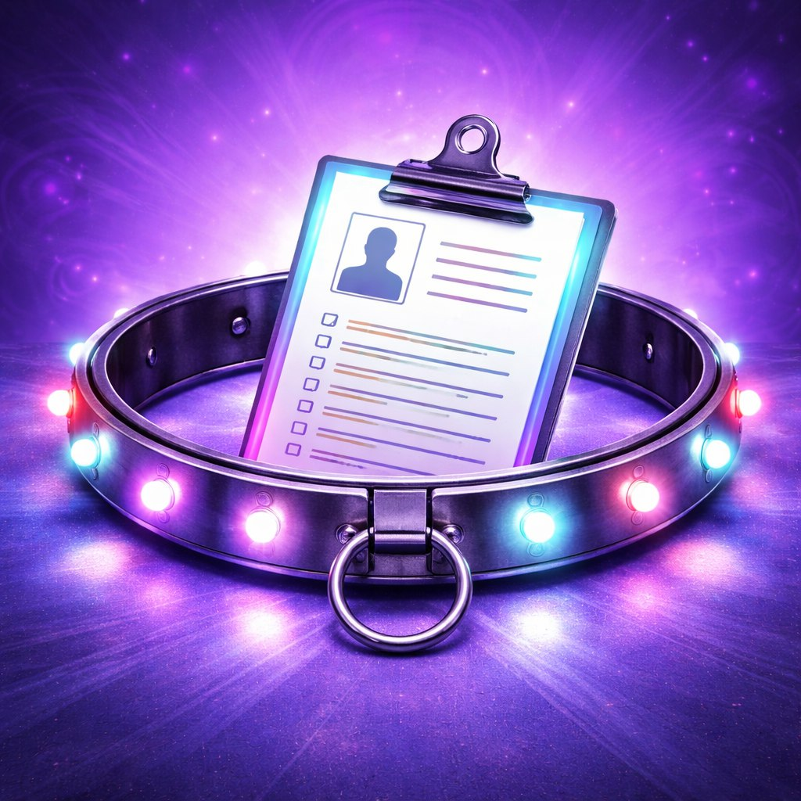

НОВОЕ ИЗОБРЕТЕНИЕ??? ДАААА!!!
Мы живем в эпоху неопределенности.
- Я вышел 5 минут назад» (прошло 2 часа).
- Я с друзьями» (но на фото только девушки).
- Телефон разрядился» (в третьем часу ночи)
Доверие — это хорошо, но геолокация точнее.
Решение
SmartCollar «Верный Друг» — первый в мире умный ошейник для партнеров, который превращает отношения в прозрачный квест.

Индивидуальная привязка (ID-Lock)
Ошейник не работает без регистрации!
- Сканирование паспорта (чтобы знать, кого именно теряем).
- Сканирование отпечатка пальца (для доступа к панели управления).
- Клятва верности (записывается на встроенный микрофон и загружается в облако навсегда).
Функционал
- GPS-Трекер «Где Ты?»
- Режим «За хлебом»: Показывает маршрут до ближайшего магазина. Если маршрут ведет в бар — отправляет уведомление: «Мы знаем, что ты делаешь».
- Режим «Пробки»: Если партнер стоит на месте дольше 10 минут, ошейник вибрирует и спрашивает: «Ты застрял или задумаешься о жизни?».
- HD-Камера «Всё вижу»
- Включается автоматически при слове «Я скоро буду».
- Функция «Зум»: Позволяет разглядеть, кто сидит напротив за столиком в кафе.
- Ночной режим: Чтобы видеть, куда вы «уезжаем» ночью (привет, Наташа!).
- Микрофон «Шепот Судьбы»
- Транслирует все разговоры в реальном времени в приложение владельца.
- Фильтр «Правда»: Автоматически выделяет голосом фразы-маркеры: «бывшая», «голова болит», «задержусь».
- Режим «Запись» для использования в суде при разделе имущества.
- Электро-шок «Напоминание» (Опция Premium)
- Легкая вибрация, если партнер забыл ответить на сообщение в течение 5 минут.
- Режим «Позвони маме» (автоматически набирает номер тещи/свекрови).
-
Экономия времени на вопрос «Где ты?»
Проблема: Вы тратите 47 минут в день на переписку «Ты скоро?», «Где ты?», «Почему не берешь трубку?».
Решение: Открыли приложение — увидели координаты, фото с камеры и уровень заряда телефона партнера.
Бонус: Освободившееся время можно потратить на что-то полезное. Например, на проверку его истории браузера. -
Гарантия, что «с друзьями» — это правда
Проблема: Фраза «Я с друзьями» может означать что угодно: от посиделок в гараже до романтического ужина на крыше.
Решение: Камера SmartCollar транслирует видео в реальном времени. Вы лично убедитесь, что это действительно друзья… или начнете собирать чемоданы.
Фишка: Автоматическое распознавание лиц. Если в кадре появляется бывшая — вам приходит push-уведомление: «Тревога! Уровень опасности: ВЫСОКИЙ». -
Встроенный детектор правды
Проблема: «Я не ел твой торт», «Это не мой номер в телефоне», «Мы просто общаемся».
Решение: Микрофон + ИИ-анализ голоса определяют стресс, ложь и попытки уклониться от ответа.
Результат: Ошейник мягко вибрирует, когда партнер врет. А если врет нагло — включает сирену (опция «Для особо подозрительных»). -
Вы больше не пропустите ничего важного
Проблема: Партнер «забыл» рассказать про встречу с коллегой, случайный комплимент официантке или спонтанную поездку за город.
Решение: SmartCollar записывает всё. Вы можете в любой момент включить режим «Повтор» и переслушать ключевые моменты дня.
Дополнительно: Автоматическая вырезка скучных фрагментов. Оставляются только: «привет, красотка», «никому не говори» и «это была ошибка». -
Абсолютное спокойствие… или хотя бы иллюзия контроля
Проблема: Отношения — это всегда риск. А риск — это стресс. Стресс — это морщины.
Решение: SmartCollar дает вам чувство полного контроля над ситуацией. Пусть даже это чувство ложное.
Философский бонус: Если партнер всё равно найдёт способ обмануть систему — значит, он действительно достоин вас. А ошейник поможет отследить, как именно он это сделал (для работы над ошибками).